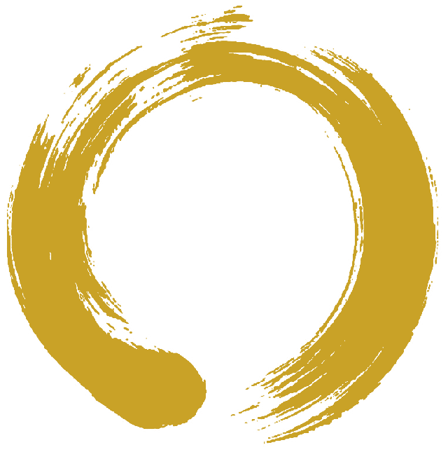

| drwxr-xr-x | focusZ/ C++ Hyprland plugin — windows stack as Z-axis depth cards. |
| drwxr-xr-x | p02-rust-firmware/ Rust no_std firmware on ESP32 — LM35 sensor to serial. step one toward implantables. |
| drwxr-xr-x | nexusrecon/ Python recon framework v5.0 — enum, crawl, nuclei 2-pass, PDF report. |
| drwxr-xr-x | honeypot/ Python threat detection — classify, fingerprint, score, correlate. |
| drwxr-xr-x | log-analyzer/ Python mini SIEM — sliding-window correlation, GeoIP, MITRE ATT&CK tags. |
| drwxr-xr-x | ti-feed-parser/ Python threat-intel feed consumer — enrichment the way a SOC analyst does it. |